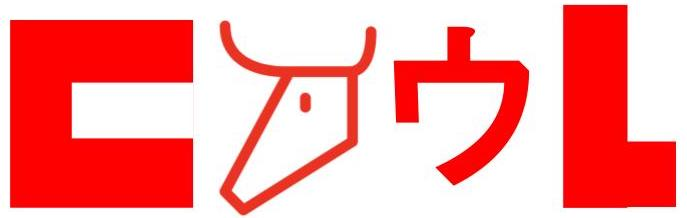

|
 [Image credit for Proto-Sinaitic ‘alp 𐤀 used in logo: here (CC-BY-2.5, Author: Pmx)] |
Third Workshop on Computation and Written Language (CAWL 2026) To be held in conjunction with LREC 2026 |
Workshop description
Most work on NLP focuses on language in its canonical written form. This has often led researchers to ignore the differences between written and spoken language or, worse, to conflate the two. Instances of conflation are statements like "Chinese is a logographic language" or "Persian is a right-to-left language", variants of which can be found frequently in the ACL anthology. These statements confuse properties of the language with properties of its writing system. Ignoring differences between written and spoken language leads, among other things, to conflating different words that are spelled the same (e.g., English bass), or treating as different, words that have multiple spellings (e.g., Japanese umai ‘tasty’, which can be written 旨い, うまい, ウマい, or 美味い). Furthermore, methods for dealing with written language issues (e.g., various kinds of normalization or conversion) or for recognizing text input (e.g. OCR & handwriting recognition or text entry methods) are often regarded as precursors to NLP rather than as fundamental parts of the enterprise, despite the fact that most NLP methods rely centrally on representations derived from text rather than (spoken) language. This general lack of consideration of writing has led to much of the research on such topics to largely appear outside of ACL venues, in conferences or journals of neighboring fields such as speech technology (e.g., text normalization) or human-computer interaction (e.g., text entry).
This year's workshop will feature an invited talk by Zev Handel (University of Washington) on East Asian writing systems, a tutorial on working with different writing systems, and posters and presentations for submitted work. For the first time ever, CAWL will feature a cash prize of $500 USD for the best student submission.
CAWL workshops are organized under the guidance of the ACL Special Interest Group on Writing Systems and Written Language (SIGWrit).
For questions about the workshop, please contact the workshop organizers at cawl-2026-organizers@googlegroups.com
Schedule
| 9:00–9:30 | Opening remarks Kyle Gorman |
| 9:30–10:30 | Keynote: Everything you wanted to know about East Asian writing but didn’t think to ask: The history and structure of scripts for Chinese, Japanese, Korean, and Vietnamese Zev Handel |
| 10:30-11:00 | Coffee break |
| 11:00–12:00 | Oral session: |
| 11:00–11:15 | The Degree of Language Diacriticity and Its Effect on Tasks Adi Cohen and Yuval Pinter |
| 11:15–11:30 | Private-Use Area Characters in the Wild: Signal or Noise? Alexander Gutkin, Adrian Benton, Christo Kirov, Brian Roark and Lawrence Wolf-Sonkin |
| 11:30–11:45 | HAnnoI: A Handwriting Annotation Interface to Extract Data for Linguistic Analyses of Graphetic Detail Joshua Wieler, Simon Petitjean, Kristian Berg, Henriette Huber and Stefan Hartmann |
| 11:45–12:00 | SoriGraph: A New Database of Visual Feature-Level Descriptions of Written Korean Wednesday Bushong, Hala Habahbeh, Ryan Jiang and Yoolim Kim |
| 12:00–13:00 | Poster session: |
| Confusable Characters as Endangered Language Markers: The Case of North Caucasus Writing Systems Alexander Gutkin, Adrian Benton, Christo Kirov and Brian Roark | |
| Prompting Approaches to Abbreviation Expansion Kyle Gorman | |
| Evaluating Data Augmentation Strategies for Training Spanish Misspelling Detection Models Manuel Castillo-Sancho, Jordi Porta and Asunción Gómez-Pérez | |
| Large Language Model-Based Post-OCR Correction for Low-Resource Kazakh Scripts Henry Gagnier | |
| G&P2P: A Multi-Source Approach to Grapheme-to-Phoneme Conversion Chun-Yi Jerry Peng | |
| A Lightweight N-gram Approach to Abbreviation Expansion in Large Corpora Tjaša Šoltes and Marko Bajec | |
| Inverse Text Normalization for Arabic Numbers in Streaming ASR Enas Albasiri, Myungjong Kim, Nourchene Ferchichi and Oluwatobi Olabiyi | |
| 1,729 vs. १७२९: The Effect of Scripts and Formats on LLM Numeracy Varshini Reddy, Craig W. Schmidt, Seth Ebner, Adam Wiemerslage, Yuval Pinter and Chris Tanner |
Organizing Committee
Program Committee